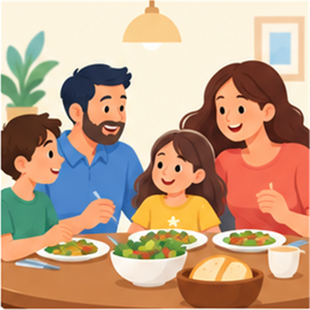
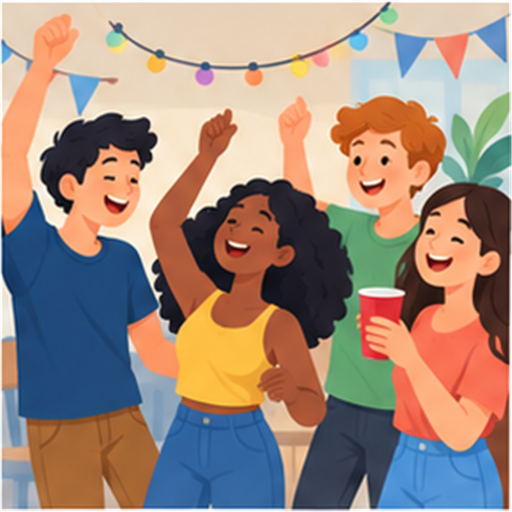

Learning objectives
- ✓Phân biệt have, has và had.
- ✓Dùng đúng các collocation với have trong hoạt động hằng ngày.
- ✓Phân biệt have, have got và have to.
- ✓Viết câu khẳng định, phủ định và câu hỏi đơn giản.
- ✓Mô tả một ngày của bạn bằng các cụm đã học.
Everyday verbs · Learn, retrieve, apply, review
Học cách dùng have, has, had và các cụm tự nhiên như have breakfast, have a rest và have to study.
Đừng chỉ đọc nghĩa. Hãy nhìn, nhớ lại, đặt câu và quay lại các lỗi còn lặp.
Have → had → had
Học cả cụm thay vì dịch từng từ: have breakfast = ăn sáng, không phải “có bữa sáng”.
Review chính các chunks, không chỉ nhìn lại danh sách từ.
Đọc lesson, xem ảnh, làm recognition.
Che nghĩa, làm fill blank và flashcard.
Dùng 4 collocation để viết câu mới.
Nói 30–45 giây về một ngày của bạn.
Giữ form, nghĩa và ngữ cảnh trong cùng một mental model.
| Pattern | Ý nghĩa | Example | Gợi ý nhớ |
|---|---|---|---|
have + noun | có / sở hữu | I have a car. | một vật, một người |
have + activity noun | thực hiện hoạt động | I have breakfast at 7. | học cả collocation |
have to + verb | phải / cần phải làm | I have to study. | sau to là verb nguyên mẫu |
She has a car.
They had dinner.
Sau chủ ngữ ngôi 3 hiện tại: has.
She doesn't have a car.
They didn't have breakfast.
Does she have a car?
Did you have breakfast?
I have a pen. ≈ I've got a pen.
She's got blue eyes.
Tự nhiên: I have breakfast at 7.
Không nên: I have got breakfast at 7.
I have to study tonight.
She has to get up early.
We had to wait for an hour.
Images giúp gợi cảnh; chunk giúp gợi cách dùng.
I get up at 6:30. I have a shower and then have breakfast. I usually have a drink before I go to school.

I have dinner with my family. After dinner, I usually study. When I am tired, I have a rest.

We sometimes have a party at home. We listen to music, eat together and have a good time.
Sau does, dùng have.
Auxiliary đã mang dấu hiệu ngôi 3.
Sau did, dùng have.
Mỗi card có ảnh, nghĩa tiếng Việt, định nghĩa ngắn, ví dụ và lỗi thường gặp.
Nhìn mặt trước, tự nhớ nghĩa/cách dùng, rồi mới flip để kiểm tra.
Practice có feedback ngay sau từng task. Câu sai sẽ vào error log để retry.
Điền các đáp án theo clue. Ô chữ có các từ giao nhau; có thể dùng bàn phím hoặc chạm từng ô.
Viết 5 câu về một ngày của bạn, dùng ít nhất 4 chunks.
Nói 30–45 giây về thói quen hằng ngày.
Dùng một chunk trong tình huống mới, không chép ví dụ cũ.
Không hiển thị đáp án trước khi nộp. Hãy làm như một lần kiểm tra thật.
Chỉ giữ lại câu sai hoặc chưa trả lời. Đọc explanation rồi practice again.
Điểm là tín hiệu để quyết định ôn gì tiếp theo, không phải nhãn cố định về năng lực.